<!DOCTYPE lake>
<h2 data-lake-id="lRISR" id="lRISR"><span data-lake-id="ua996e9be" id="ua996e9be">准备工作</span></h2><ol list="u4e176187"><li data-lake-id="u1d70350d" fid="u2addb982" id="u1d70350d"><span data-lake-id="u3d31d553" id="u3d31d553">GD32开发板。案例是以梁山派为开发板。</span></li><li data-lake-id="u263c99f2" fid="u2addb982" id="u263c99f2"><span data-lake-id="ufbf5c726" id="ufbf5c726">Windows系统的电脑。当前是以Win11的电脑来实现案例的。</span></li><li data-lake-id="u1fe0d69a" fid="u2addb982" id="u1fe0d69a"><span data-lake-id="u457dbe4f" id="u457dbe4f">Keil开发工具。并且已经安装好GD32依赖环境。</span></li><li data-lake-id="u7d473061" fid="u2addb982" id="u7d473061"><span data-lake-id="udf5b45ab" id="udf5b45ab">FreeRTOS源码包。下载地址为: </span><a data-lake-id="uf1567000" href="https://github.com/FreeRTOS/FreeRTOS/releases" id="uf1567000" rel="noopener noreferrer" target="_blank"><span data-lake-id="u8acff739" id="u8acff739">https://github.com/FreeRTOS/FreeRTOS/releases</span></a></li></ol><p data-lake-id="ue0af4a17" id="ue0af4a17" style="padding-left: 2em">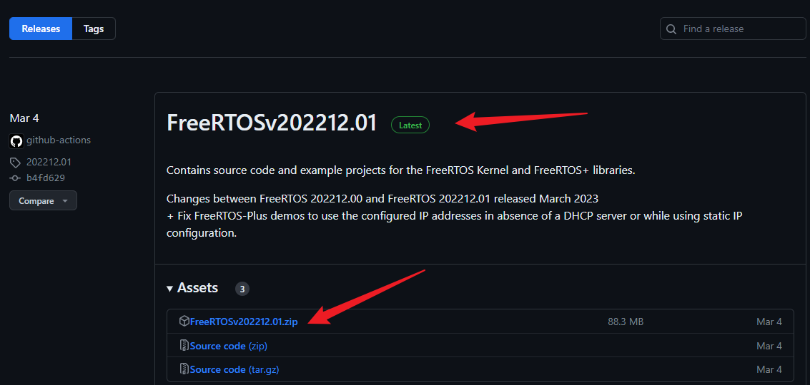</p><p data-lake-id="uf91497b3" id="uf91497b3" style="padding-left: 2em"><span data-lake-id="ud57839ee" id="ud57839ee">当前以</span><code data-lake-id="u32340d6e" id="u32340d6e"><span data-lake-id="u82b661d2" id="u82b661d2">FreeRTOSv202212.01</span></code><span data-lake-id="u15d3ad38" id="u15d3ad38">版本为例。也是目前的最新版本。</span></p><h2 data-lake-id="hh7vD" id="hh7vD"><span data-lake-id="ub41f69eb" id="ub41f69eb">移植流程</span></h2><h3 data-lake-id="z16rL" id="z16rL"><span data-lake-id="u74f2f9d4" id="u74f2f9d4">项目基础环境准备</span></h3><p data-lake-id="u13c4cf5c" id="u13c4cf5c"><span data-lake-id="ufec913f9" id="ufec913f9">参考: </span><a data-lake-id="ud45b40ab" href="https://www.yuque.com/icheima/osa819/uvhcdkzgmrus22iy#HJokw" id="ud45b40ab" target="_blank"><span data-lake-id="u07318db1" id="u07318db1">https://www.yuque.com/icheima/osa819/uvhcdkzgmrus22iy#HJokw</span></a></p><p data-lake-id="u126f6262" id="u126f6262"><span data-lake-id="ubfbb31ba" id="ubfbb31ba">新建项目名称为：</span><code data-lake-id="u62ef7eab" id="u62ef7eab"><span data-lake-id="uc1cb6fb9" id="uc1cb6fb9">FreeRTOSTemplate</span></code></p><p data-lake-id="ub2196a58" id="ub2196a58"><span data-lake-id="ub40fd8a2" id="ub40fd8a2">项目结构如下：</span></p><p data-lake-id="ubc0929b2" id="ubc0929b2">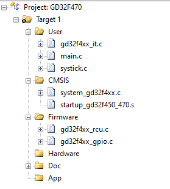</p><p data-lake-id="ua3f96a63" id="ua3f96a63"><span data-lake-id="ub744f588" id="ub744f588">确保以下配置信息的正确性：</span></p><ol list="u7556f0cc"><li data-lake-id="uc6a9441e" fid="u9fef6651" id="uc6a9441e"><span data-lake-id="udea412a5" id="udea412a5">Target的配置</span></li></ol><p data-lake-id="u3aa9140d" id="u3aa9140d" style="padding-left: 2em">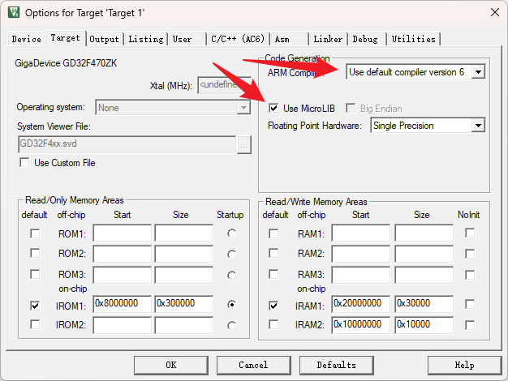</p><ol list="ufb930def" start="2"><li data-lake-id="ud6dd20c1" fid="u386ddc54" id="ud6dd20c1"><span data-lake-id="uae9ab558" id="uae9ab558">Output的配置</span></li></ol><p data-lake-id="ub12e2452" id="ub12e2452" style="padding-left: 2em">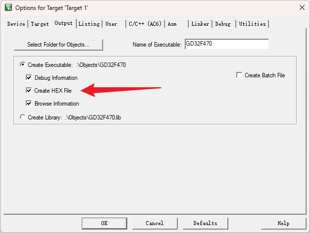</p><ol list="u6231ea31" start="3"><li data-lake-id="udf896849" fid="ufb5172ad" id="udf896849"><span data-lake-id="u6e040dee" id="u6e040dee">C/C++(AC6)配置</span></li></ol><p data-lake-id="ue5ff5373" id="ue5ff5373" style="padding-left: 2em">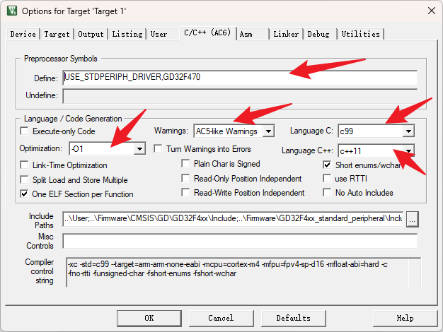</p><ol list="u38b60ec1" start="4"><li data-lake-id="u3fec05e9" fid="u17e86f01" id="u3fec05e9"><span data-lake-id="u1308c3c0" id="u1308c3c0">Debug配置</span></li></ol><p data-lake-id="uf60a20b7" id="uf60a20b7" style="padding-left: 2em">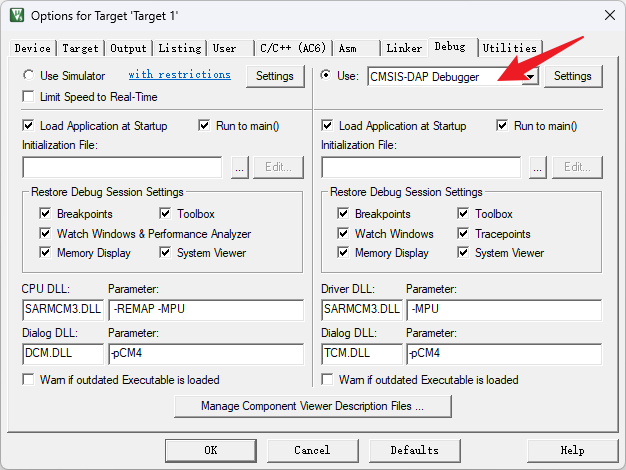</p><h3 data-lake-id="K1LVL" id="K1LVL"><span data-lake-id="u5788b7a7" id="u5788b7a7">FreeRTOS移植</span><a data-lake-id="u6db1ccf0" href="https://arm-software.github.io/CMSIS-FreeRTOS/latest/index.html" id="u6db1ccf0" rel="noopener noreferrer" target="_blank"><span data-lake-id="u85215ba7" id="u85215ba7">:</span></a></h3><h4 data-lake-id="BZm43" id="BZm43"><span data-lake-id="u01cf8e3c" id="u01cf8e3c">FreeRTOS源码裁剪</span><a data-lake-id="u4385d6e1" href="https://www.keil.arm.com/packs/cmsis-freertos-arm/versions/" id="u4385d6e1" rel="noopener noreferrer" target="_blank"><span data-lake-id="ud38381b9" id="ud38381b9">.</span></a></h4><ol list="u1ea0abe6"><li data-lake-id="u95ae3bba" fid="u9cfa7029" id="u95ae3bba"><span data-lake-id="u3de08b60" id="u3de08b60">源码解压</span></li></ol><p data-lake-id="ua40363cd" id="ua40363cd" style="padding-left: 2em">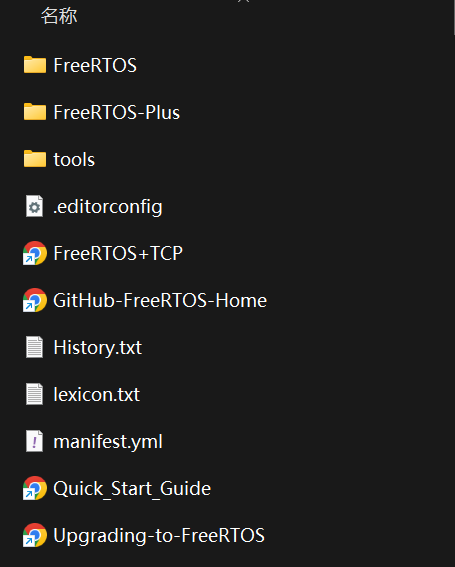</p><ol list="u95e76543" start="2"><li data-lake-id="ub060bd5a" fid="ucb87a00c" id="ub060bd5a"><span data-lake-id="ub0516779" id="ub0516779">进入</span><code data-lake-id="u99789a93" id="u99789a93"><span data-lake-id="ude79fb6f" id="ude79fb6f">FreeRTOS/Source</span></code><span data-lake-id="u5ffdf264" id="u5ffdf264">目录。此目录就是我们要移植的源码。</span></li></ol><p data-lake-id="udcd45ae1" id="udcd45ae1" style="padding-left: 2em">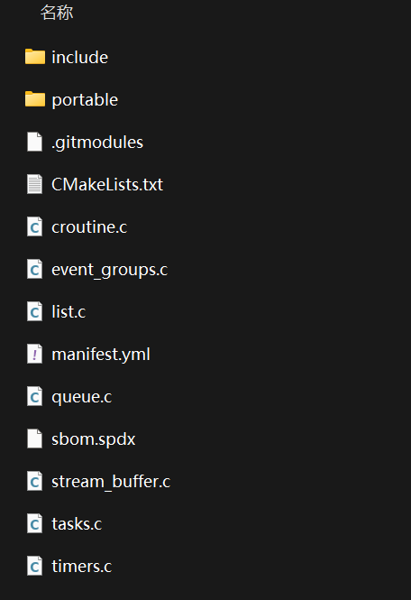</p><ol list="u9151db42" start="3"><li data-lake-id="u1d933d9d" fid="udd13057c" id="u1d933d9d"><span data-lake-id="uf4e071a5" id="uf4e071a5">在你新建的</span><code data-lake-id="u13612923" id="u13612923"><span data-lake-id="u3d25b781" id="u3d25b781">FreeRTOSTemplate</span></code><span data-lake-id="u6833b8a2" id="u6833b8a2">工程目录下，新建一个文件夹</span><code data-lake-id="u5913e4ae" id="u5913e4ae"><span data-lake-id="ufd991a70" id="ufd991a70">FreeRTOS</span></code><span data-lake-id="u4d6c982a" id="u4d6c982a">,将以上源码拷贝到这个文件夹中。</span></li></ol><p data-lake-id="u3acb22d9" id="u3acb22d9" style="padding-left: 2em">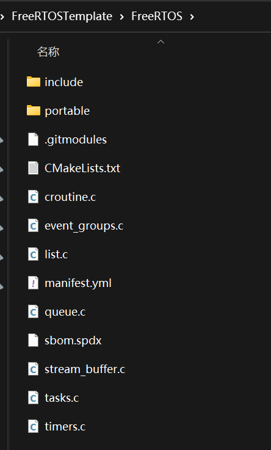</p><ol list="uf077d330" start="4"><li data-lake-id="ue14b3088" fid="u94947329" id="ue14b3088"><span data-lake-id="u24d45a63" id="u24d45a63">删除不必要的文件。来到</span><code data-lake-id="u2a5b05e6" id="u2a5b05e6"><span data-lake-id="ub1bd7d8f" id="ub1bd7d8f">portable</span></code><span data-lake-id="u6cebaaa0" id="u6cebaaa0">目录只保留</span><code data-lake-id="u42396819" id="u42396819"><span data-lake-id="u60217bca" id="u60217bca">GCC</span></code><span data-lake-id="u0ae1bc5b" id="u0ae1bc5b">和</span><code data-lake-id="ub0633654" id="ub0633654"><span data-lake-id="u37ab737b" id="u37ab737b">MemManag</span></code><span data-lake-id="u37f1da8a" id="u37f1da8a">目录</span></li></ol><p data-lake-id="u13d09121" id="u13d09121" style="padding-left: 2em">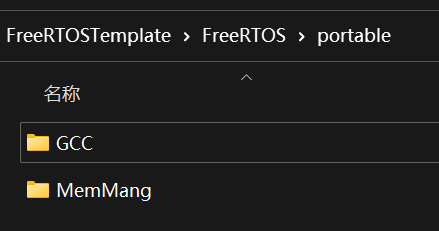</p><h4 data-lake-id="jnVJq" id="jnVJq"><span data-lake-id="uba7debda" id="uba7debda">源码目录构建</span></h4><ol list="u34050892"><li data-lake-id="u51762065" fid="u2fa92c47" id="u51762065"><span data-lake-id="u47d7b8bd" id="u47d7b8bd">新建两个Group：</span><code data-lake-id="u22fad1a3" id="u22fad1a3"><span data-lake-id="ufc6f8205" id="ufc6f8205">FreeRTOS_Core</span></code><span data-lake-id="uaed5e3dd" id="uaed5e3dd">和</span><code data-lake-id="ucd8fcd7a" id="ucd8fcd7a"><span data-lake-id="u92554d11" id="u92554d11">FreeRTOS_Port</span></code></li></ol><p data-lake-id="uaa818ca8" id="uaa818ca8" style="padding-left: 2em">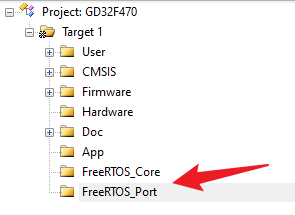</p><ol list="ub8165116" start="2"><li data-lake-id="u3578583e" fid="u532ad5da" id="u3578583e"><code data-lake-id="uf9fedf6e" id="uf9fedf6e"><span data-lake-id="u113cc90f" id="u113cc90f">FreeRTOS_Core</span></code><span data-lake-id="u4d807687" id="u4d807687">添加源码。源码为</span><code data-lake-id="uad6f5ee3" id="uad6f5ee3"><span data-lake-id="u4a0306cd" id="u4a0306cd">FreeRTOS</span></code><span data-lake-id="u376179f3" id="u376179f3">根目录下的</span><code data-lake-id="uca55efe6" id="uca55efe6"><span data-lake-id="ue5a16f22" id="ue5a16f22">c文件</span></code></li></ol><p data-lake-id="ub9ad77a1" id="ub9ad77a1" style="padding-left: 2em">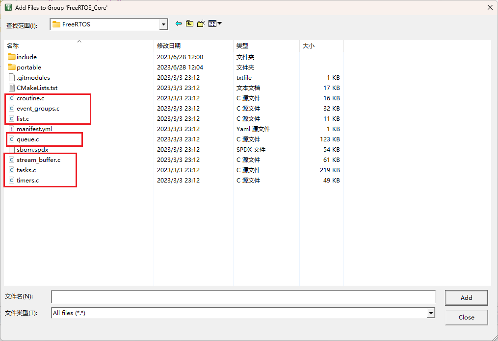</p><p data-lake-id="u238a5632" id="u238a5632" style="padding-left: 2em">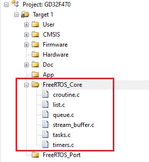</p><ol list="u3b3eca2d" start="3"><li data-lake-id="uec9ec635" fid="uca7b11e5" id="uec9ec635"><code data-lake-id="u3a87554b" id="u3a87554b"><span data-lake-id="u909f76a0" id="u909f76a0">FreeRTOS_Port</span></code><span data-lake-id="ud4e46016" id="ud4e46016">添加源码。源码为</span><code data-lake-id="u80ea7b2a" id="u80ea7b2a"><span data-lake-id="u3279018b" id="u3279018b">FreeRTOS/portable/MemMang</span></code><span data-lake-id="u846bf2d7" id="u846bf2d7">下的</span><code data-lake-id="u0a373067" id="u0a373067"><span data-lake-id="u227d51aa" id="u227d51aa">heap_4.c</span></code><span data-lake-id="u1fb22d28" id="u1fb22d28">。源码为</span><code data-lake-id="ud1477be5" id="ud1477be5"><span data-lake-id="u9676264c" id="u9676264c">FreeRTOS/portable/GCC/ARM_CM4F</span></code><span data-lake-id="ue3fca1ba" id="ue3fca1ba">下的</span><code data-lake-id="u71419862" id="u71419862"><span data-lake-id="ub57f9ebd" id="ub57f9ebd">port.c</span></code></li></ol><p data-lake-id="u3de9b8cd" id="u3de9b8cd" style="padding-left: 2em">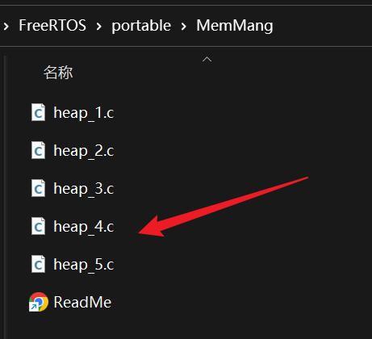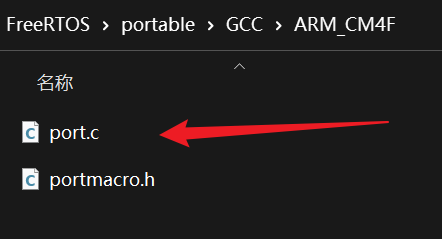</p><ol list="u879a97e8" start="4"><li data-lake-id="u1fe28b42" fid="uf149cbcc" id="u1fe28b42"><span data-lake-id="u9d7e8d6c" id="u9d7e8d6c">添加头文件支持。将</span><code data-lake-id="u98f8661a" id="u98f8661a"><span data-lake-id="u7cf66d36" id="u7cf66d36">FreeRTOS/include</span></code><span data-lake-id="u9004fac4" id="u9004fac4">和</span><code data-lake-id="u77daa0f8" id="u77daa0f8"><span data-lake-id="u16ea508a" id="u16ea508a">FreeRTOS/portable/GCC/ARM_CM4F</span></code><span data-lake-id="u09684af8" id="u09684af8">添加到头文件依赖中。</span></li></ol><p data-lake-id="ub7003764" id="ub7003764" style="padding-left: 2em">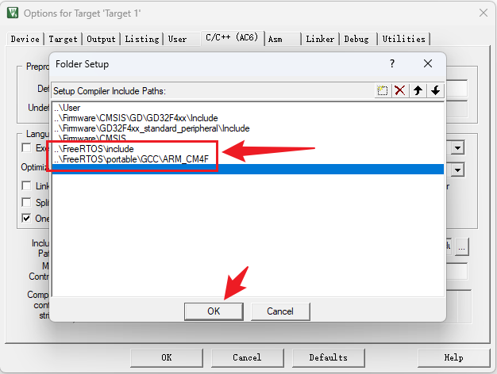</p><h4 data-lake-id="Ck9qk" id="Ck9qk"><span data-lake-id="u5a26be92" id="u5a26be92">FreeRTOSConfig.h文件缺失解决</span></h4><p data-lake-id="uf1b8a3bd" id="uf1b8a3bd"><span data-lake-id="ub1b1fd44" id="ub1b1fd44">编译项目，会出现以下错误：</span></p><p data-lake-id="ud97c6b3d" id="ud97c6b3d">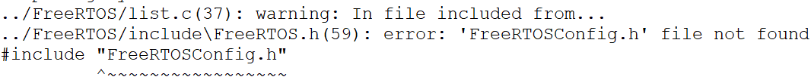</p><p data-lake-id="u2a2554fc" id="u2a2554fc"><span data-lake-id="u8312e65f" id="u8312e65f">来到FreeRTOS源码目录中，找到</span><code data-lake-id="u05e09723" id="u05e09723"><span data-lake-id="uc2933545" id="uc2933545">FreeRTOSv202212.01\FreeRTOS\Demo\CORTEX_M4F_STM32F407ZG-SK</span></code><span data-lake-id="u73c87e1d" id="u73c87e1d">目录中的</span><code data-lake-id="u3cb7cee9" id="u3cb7cee9"><span data-lake-id="u4b28b60f" id="u4b28b60f">FreeRTOSConfig.h</span></code><span data-lake-id="u904495a4" id="u904495a4">文件，进行拷贝。</span></p><p data-lake-id="u7d1a2e16" id="u7d1a2e16">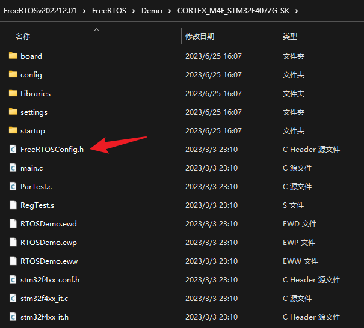</p><p data-lake-id="u0e1d6824" id="u0e1d6824"><span data-lake-id="ufe19399c" id="ufe19399c">将</span><code data-lake-id="uce5f3a3e" id="uce5f3a3e"><span data-lake-id="uea842fd3" id="uea842fd3">FreeRTOSConfig.h</span></code><span data-lake-id="u9e7a666f" id="u9e7a666f">文件拷贝到项目目录中的</span><code data-lake-id="u48f3f0aa" id="u48f3f0aa"><span data-lake-id="ub4f95d7d" id="ub4f95d7d">FreeRTOS</span></code><span data-lake-id="u95f135ac" id="u95f135ac">目录下</span></p><p data-lake-id="u7047f899" id="u7047f899">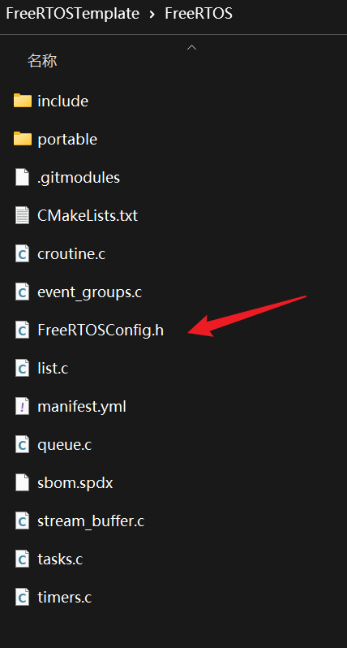</p><p data-lake-id="u0c72ff56" id="u0c72ff56"><span data-lake-id="u51220328" id="u51220328">添加头文件引入。将</span><code data-lake-id="ud8982dd4" id="ud8982dd4"><span data-lake-id="u2ae6cd8b" id="u2ae6cd8b">FreeRTOS</span></code><span data-lake-id="u353c9fc6" id="u353c9fc6">目录添加到</span><strong><span data-lake-id="u1a7f46a4" id="u1a7f46a4">include path</span></strong><span data-lake-id="u2d8dbf00" id="u2d8dbf00">中。</span></p><p data-lake-id="u5a11a02c" id="u5a11a02c">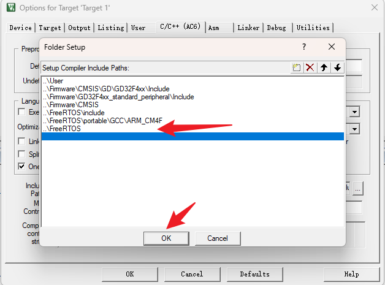</p><h4 data-lake-id="chwvC" id="chwvC"><span data-lake-id="ua35b679a" id="ua35b679a">SystemCoreClock问题解决</span></h4><p data-lake-id="u7e1ab33b" id="u7e1ab33b"><span data-lake-id="u435c4252" id="u435c4252">编译项目，会出现以下错误：</span></p><p data-lake-id="ua7b8e89b" id="ua7b8e89b">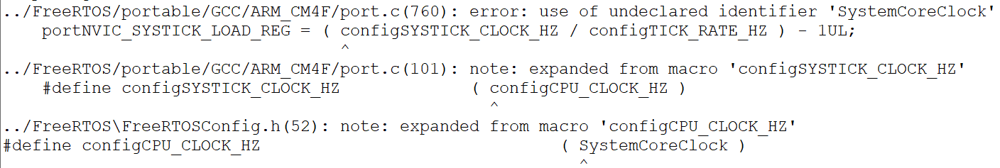</p><p data-lake-id="ub8e4cbb5" id="ub8e4cbb5"><span data-lake-id="uc0209ac2" id="uc0209ac2">来到</span><code data-lake-id="u599da537" id="u599da537"><span data-lake-id="u8edcbcc7" id="u8edcbcc7">FreeRTOSConfig.h</span></code><span data-lake-id="ua2898d37" id="ua2898d37">文件中，观察以下内容:</span></p><p data-lake-id="u5abb8fdd" id="u5abb8fdd">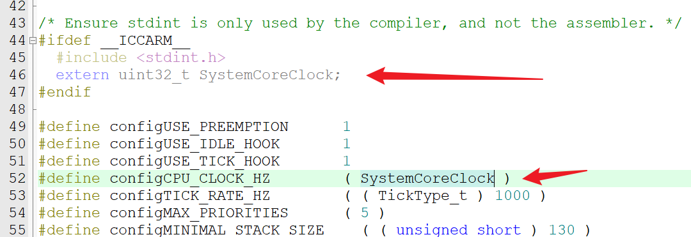</p><ol list="ucb3c3586"><li data-lake-id="u54d74527" fid="u7f343a3b" id="u54d74527"><span data-lake-id="uef488070" id="uef488070">SystemCoreClock其实是有的</span></li><li data-lake-id="u5ee1a018" fid="u7f343a3b" id="u5ee1a018"><span data-lake-id="uc8c8f293" id="uc8c8f293">SystemCoreClock在编译预处理前没有被定义出来。原因是</span><code data-lake-id="u804f2eb0" id="u804f2eb0"><span data-lake-id="u50df5d5c" id="u50df5d5c">extern uint32_t SystemCoreClock;</span></code><span data-lake-id="u1df37449" id="u1df37449">这一段没有进入编译，因为在编译预处理前不满足</span><code data-lake-id="u636957a7" id="u636957a7"><span data-lake-id="u96b22198" id="u96b22198">#ifdef __ICCARM__</span></code><span data-lake-id="u02fa62a8" id="u02fa62a8">这个条件。编译器c语言条件不满足。我们将以上代码进行修改。</span></li></ol><span class="yuque-card-unsupported">[codeblock]</span><span class="yuque-card-unsupported">[codeblock]</span><h4 data-lake-id="c2Eqc" id="c2Eqc"><span data-lake-id="u9b829340" id="u9b829340">xxx_Handler问题解决</span></h4><p data-lake-id="u333d6f26" id="u333d6f26"><span data-lake-id="u1e0e0456" id="u1e0e0456">编译项目，会出现以下错误：</span></p><p data-lake-id="u296c60ce" id="u296c60ce">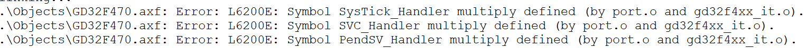</p><p data-lake-id="u63aaf4d4" id="u63aaf4d4"><span data-lake-id="ub56129e9" id="ub56129e9">来到</span><code data-lake-id="u2db72614" id="u2db72614"><span data-lake-id="u0929e96f" id="u0929e96f">gd32f4xx_it.c</span></code><span data-lake-id="u00bb9360" id="u00bb9360">文件中。修改三个函数</span><code data-lake-id="u884c9712" id="u884c9712"><span data-lake-id="udbd4a6f3" id="udbd4a6f3">SVC_Handler</span></code><span data-lake-id="u9f917552" id="u9f917552">,</span><code data-lake-id="u7d0fac8b" id="u7d0fac8b"><span data-lake-id="ue0e05f45" id="ue0e05f45">PendSV_Handler</span></code><span data-lake-id="u0e1aa761" id="u0e1aa761">,</span><code data-lake-id="ue373d367" id="ue373d367"><span data-lake-id="u4f8f86a0" id="u4f8f86a0">SysTick_Handler</span></code><span data-lake-id="u052df1a4" id="u052df1a4">,将函数通过宏定义包裹:</span></p><span class="yuque-card-unsupported">[codeblock]</span><p data-lake-id="u4281c509" id="u4281c509"><span data-lake-id="u367995b2" id="u367995b2">修改后如下：</span></p><span class="yuque-card-unsupported">[codeblock]</span><p data-lake-id="ua43edb79" id="ua43edb79"><span data-lake-id="u626d6af7" id="u626d6af7">配置</span><code data-lake-id="u7e70c201" id="u7e70c201"><span data-lake-id="u197a47a5" id="u197a47a5">C/C++(AC6)</span></code><span data-lake-id="u9a2908ba" id="u9a2908ba">中的</span><code data-lake-id="u3358eb6d" id="u3358eb6d"><span data-lake-id="u8b291867" id="u8b291867">define</span></code><span data-lake-id="uc256586e" id="uc256586e">为：</span><code data-lake-id="ud5e32774" id="ud5e32774"><span data-lake-id="u70424b11" id="u70424b11">USE_STDPERIPH_DRIVER,GD32F470,SYS_SUPPORT_OS</span></code></p><p data-lake-id="u204e4c76" id="u204e4c76">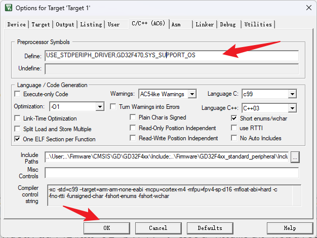</p><h4 data-lake-id="btL27" id="btL27"><span data-lake-id="u2cdf9d92" id="u2cdf9d92">vApplicationXXXHook问题解决</span></h4><p data-lake-id="ud5a90e29" id="ud5a90e29"><span data-lake-id="u44a2aae9" id="u44a2aae9">编译项目，会出现以下错误：</span></p><p data-lake-id="u9396a977" id="u9396a977">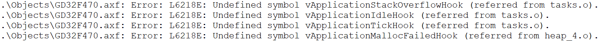</p><p data-lake-id="u66a673c6" id="u66a673c6"><span data-lake-id="u74b36c5d" id="u74b36c5d">修改</span><code data-lake-id="ue0913312" id="ue0913312"><span data-lake-id="ufaac4497" id="ufaac4497">FreeRTOSConfig.h</span></code><span data-lake-id="u3f95ac00" id="u3f95ac00">中的配置：</span></p><span class="yuque-card-unsupported">[codeblock]</span><span class="yuque-card-unsupported">[codeblock]</span><span class="yuque-card-unsupported">[codeblock]</span><span class="yuque-card-unsupported">[codeblock]</span><h4 data-lake-id="Sv3OR" id="Sv3OR"><span data-lake-id="u593d74c1" id="u593d74c1">Systick硬件delay</span></h4><p data-lake-id="u3bcc1275" id="u3bcc1275"><span data-lake-id="u928eefa7" id="u928eefa7">修改</span><code data-lake-id="u9be7c3bc" id="u9be7c3bc"><span data-lake-id="u76e004b4" id="u76e004b4">systick.c</span></code><span data-lake-id="ucfd165a1" id="ucfd165a1">源码，修改如下</span></p><span class="yuque-card-unsupported">[codeblock]</span><h3 data-lake-id="rKHDg" id="rKHDg"><span data-lake-id="u020fc332" id="u020fc332">LED点亮测试</span></h3><p data-lake-id="ud229e29a" id="ud229e29a">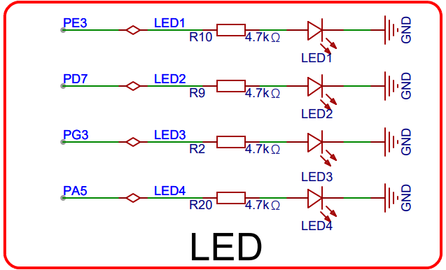</p><p data-lake-id="uaf5be74d" id="uaf5be74d"><span data-lake-id="u2022d1a7" id="u2022d1a7">开启任务，点亮</span><code data-lake-id="ub538269e" id="ub538269e"><span data-lake-id="ue4cd6467" id="ue4cd6467">PE3</span></code><span data-lake-id="u82872fe1" id="u82872fe1">和</span><code data-lake-id="u3ca0c3e1" id="u3ca0c3e1"><span data-lake-id="u2d2942d8" id="u2d2942d8">PD7</span></code></p><p data-lake-id="u23983651" id="u23983651"><span data-lake-id="ue85e4fbf" id="ue85e4fbf">在main.c中编写代码如下：</span></p><span class="yuque-card-unsupported">[codeblock]</span><p data-lake-id="u48d6ccbb" id="u48d6ccbb"><span data-lake-id="ua1b50430" id="ua1b50430">这里有两个注意点：</span></p><ol list="u5bea9a03"><li data-lake-id="uc357e35e" fid="u36e92723" id="uc357e35e"><span data-lake-id="u8eb7dd28" id="u8eb7dd28">不能再自行调用</span><code data-lake-id="u9b7a4e27" id="u9b7a4e27"><span data-lake-id="uc7fb0307" id="uc7fb0307">systick_config();</span></code><span data-lake-id="uad650dba" id="uad650dba">，因为FreeRTOS已经初始化了systick，再次配置会覆盖掉系统的配置，导致任务执行异常。</span></li><li data-lake-id="u5b70ea2a" fid="u36e92723" id="u5b70ea2a"><span data-lake-id="uf69bd44f" id="uf69bd44f">main开始位置需要根据FreeRTOS的权限等级，配置全局中断优先级分组：</span></li></ol><p data-lake-id="uafd2f76c" id="uafd2f76c"><span data-lake-id="uca7fc4e6" id="uca7fc4e6"> </span><code data-lake-id="uedeb6c2e" id="uedeb6c2e"><span data-lake-id="u446207b0" id="u446207b0">nvic_priority_group_set(NVIC_PRIGROUP_PRE4_SUB0);</span></code></p><h2 data-lake-id="ZJFle" id="ZJFle"><span data-lake-id="ua8b2a835" id="ua8b2a835">HelloWorld</span></h2><p data-lake-id="uc04e06f8" id="uc04e06f8"><span data-lake-id="u1eb9b2c9" id="u1eb9b2c9">实现多任务串口打印功能。</span></p><p data-lake-id="uc9af1817" id="uc9af1817"><span data-lake-id="u79db3848" id="u79db3848">开发流程：</span></p><ol list="u485f6f35"><li data-lake-id="u1a67dddf" fid="u25ed3d0e" id="u1a67dddf"><span data-lake-id="u0289ea07" id="u0289ea07">通过模板创建项目</span></li><li data-lake-id="u6c0f44a1" fid="u25ed3d0e" id="u6c0f44a1"><span data-lake-id="u3693da30" id="u3693da30">添加串口支持库</span></li><li data-lake-id="u62f78045" fid="u25ed3d0e" id="u62f78045"><span data-lake-id="ua2f0979c" id="ua2f0979c">添加所需要c依赖，以及包含所需要h头</span></li><li data-lake-id="ufd0571c2" fid="u25ed3d0e" id="ufd0571c2"><span data-lake-id="ucf4e4f77" id="ucf4e4f77">运行测试，查看效果。</span></li></ol><span class="yuque-card-unsupported">[codeblock]</span><span class="yuque-card-unsupported">[codeblock]</span><span class="yuque-card-unsupported">[codeblock]</span>